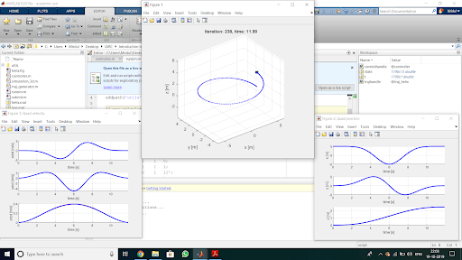

Position Hold

Simulation Results
An interdisciplinary team of 20 members which worked towards the goal of developing a swarm of 4 autonomous drones to participate in the International Aerial Robotics Competition, the longest-running autonomous drone competition in the world.
I was involved in extensive testing of the flight controller on our Quadcopter. We successfully configured the FC and fine-tuned the gains to achieve a stable altitude hold as well as Position-Hold. I was also working on developing our own control algorithm for implementing high-level control to obtain desired results. This involved an extensive study of Quadcopter dynamics and studies Control theory. Modelled it on MATLAB using Quaternions & Newton-Euler equations and implemented a PID based closed-loop feedback control algorithm. Finally, studied various trajectory algorithms for UAVs and implemented the Minimum Snap Trajectory over a set of way-points to ensure a dynamically constrained path.
Position Hold
Simulation Results
The ASME Student Design Competition provides a platform for Student to present their solutions to a range of design problems - from everyday household tasks to groundbreaking space exploration.
I was the part of a 14 member team from IIT Bombay that participated in the competition in 2019. The task was to pick up 16 balls of different sizes (ranging from a ping pong ball to a basketball) kept at 20 cms height on PVC pipes, collect them and deposit them within a marked square to score points. I worked in the Design & Manufacturing subsystem where I ideated & designed the gripper assembly that successfully performed the tasks. It was a rack and pinion based forklift mechanism. After completing the final CAD in Solidworks, I also worked on getting all the parts manufactured, this involved selecting different materials and finalising the electrical components suitable for the mechanism. The final step was to complete the assembly which often involved making changes to the design using tools to compensate for minor errors during the manufacturing.
Our team came Overall first in Asia-Pacific Regional out of 24 teams from all over Asia held at VIT, Vellore and Qualified for the World Finals.
The aim of the pilot project is to demonstrate the usefulness of manned drones for organ transport. A robust and reliable system with an octocopter configuration capable of lifting a human is chosen. This project is being executed in stages.
Stage-1 included assembly of a 250mm drone and autonomous testing of the same. I contributed towards the setup and tuning of the flight controller, we successfully executed autonomous waypoint navigation along with landing and takeoff.
For Stage-2, we successfully designed and flew a 750mm frame with X8 configuration and observed a flight time of 25 minutes. I worked in the electrical assembly and controls system setup of the drone which used 8 lithium batteries of having 6 cells each. Current work is on making the system ready for autonomous flight.
Stage 3 included the CAD development of a 1,500mm single-seater drone. I helped in ideating various aspects of the model as well as performed Structural Analysis of the CAD to locate weak spots, hence enabling further iterations. This model is currently being manufactured and will initially run on Lthium battery packs. Further, research is ongoing for exploring Hydrogen Fuel Cells as a potential energy source for the drone, this will significantly increase flight time.
The project was a part of Summer of Sciences 2020, a self learning gided project organized by the Maths & Pysics Club, IIT- Bombay
Explored the field of robotics by learning & implementing various tasks involved. Started with the basic understanding of ROS (to be used as the framework ) followed by implementation on Gazebo to simulate the results. Created & manipulated a turtle bot and a robotic arm in a factory environment using URDF & Xacro files and manipulated the same using Moveit. Further studies different motion planning algorithms like Grassfire, Dijkstra’s, A* & RRT* (Rapidly exploring Random Trees). Also explored different ways of developing configurational spaces for our robot using methods like Visibility graphs or Trapezoidal decomposition.
Finally, concluded the project by studying about vision-guided navigation, transposing between world and camera frames and using the underlying equations to estimate the geolocation of objects using just the camera feed.
Develop your own website - Click now